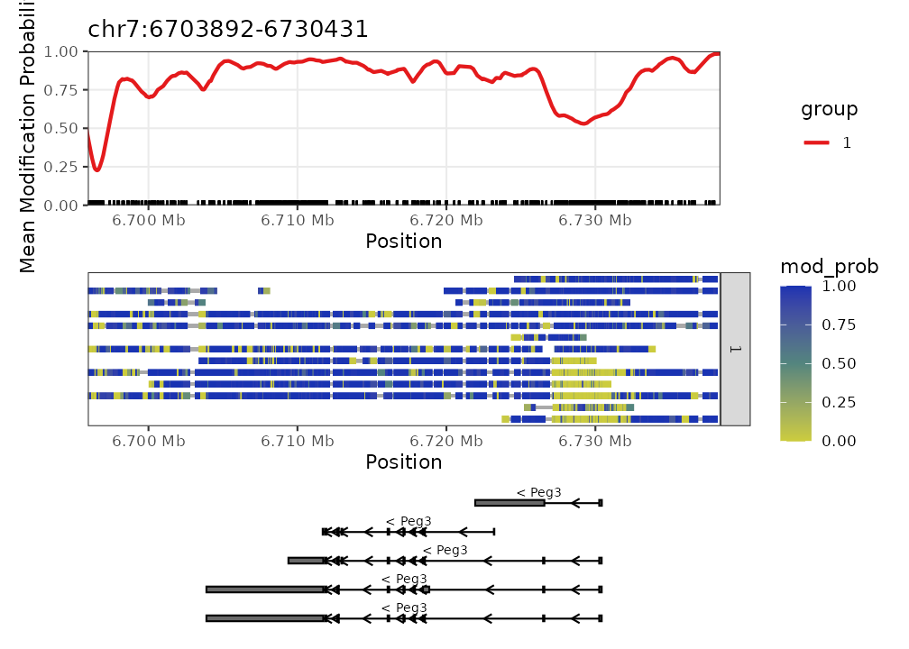
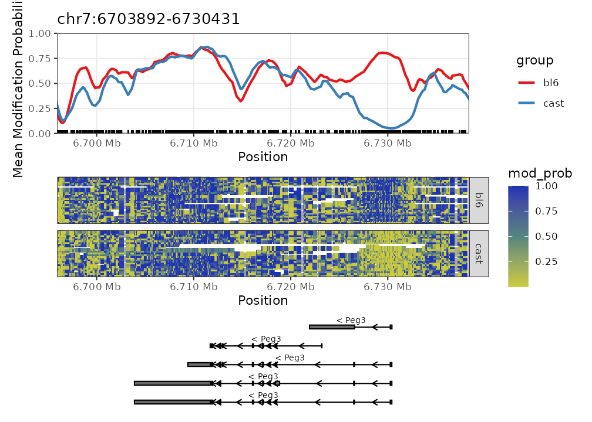
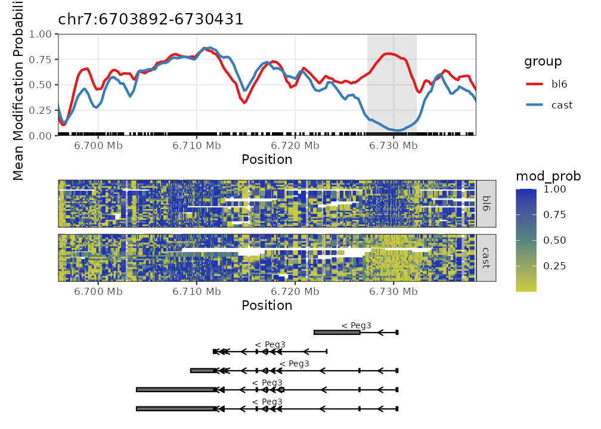
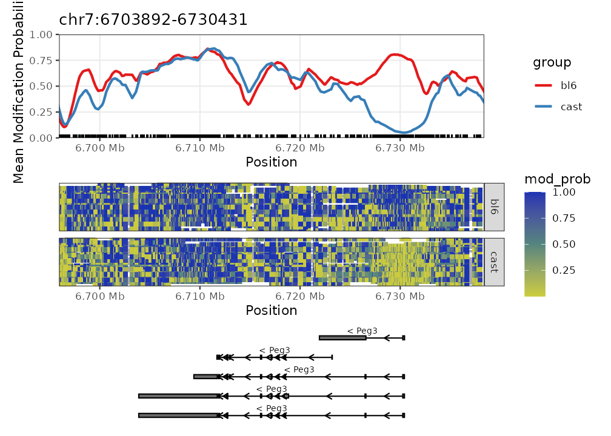
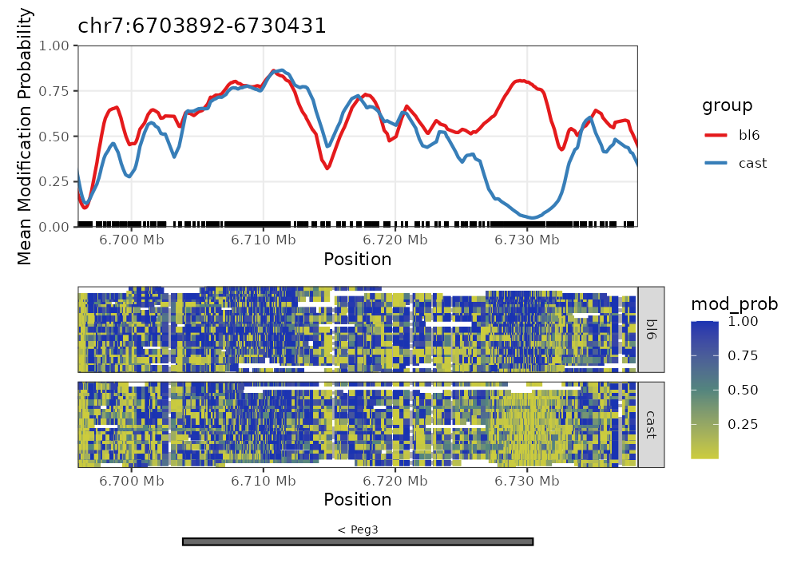
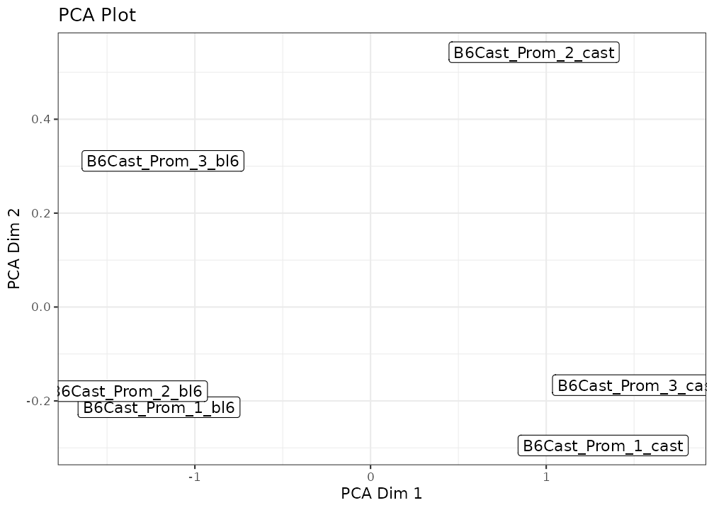
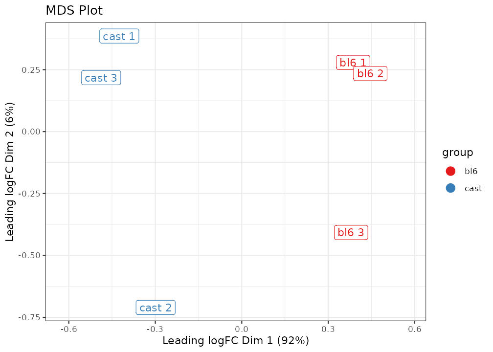
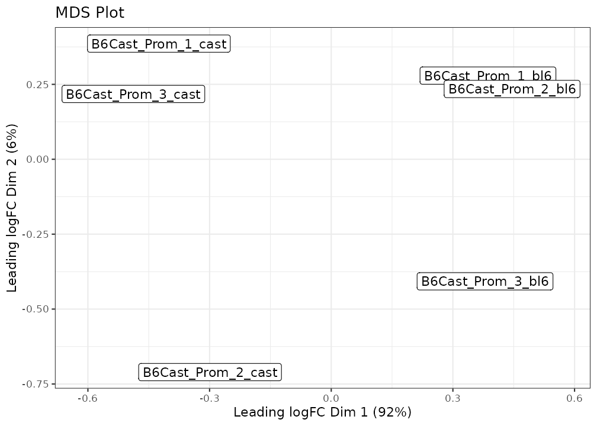

Introduction
The NanoMethViz package is designed to visualise
methylation data from long-read sequencing. It provides a simple
interface to plot methylation data, and to perform dimensionality
reduction on the data. The package is designed to work with methylation
data on a per-read basis.
We provide functions for converting to various formats for downstream analysis, and visualising methylation data at various levels of resolution. Features are all developed to work with 5mC CpG methylation data, but it will work with other modifications if the data is in the correct format, as the type of modification is not generally specified in the data.
This package is designed to work with methylation data from the Oxford Nanopore Technologies (ONT) platform. Currently it supports data from the following software:
- dorado (modBAM)
- modkit (tsv generated by
modkit extract full) - Megalodon (tsv)
- Nanopolish (tsv)
- f5c (tsv)
It is possible to use data from other software as long as it matches the format of the data used in this package. If you would like any further other formats supported please create an issue at https://github.com/Shians/NanoMethViz/issues.
Installation
To install this package, run
if (!requireNamespace("BiocManager", quietly = TRUE))
install.packages("BiocManager")
BiocManager::install("NanoMethViz")Importing data
In order to use this package, your data must be converted from the
output of methylation calling software to a tabix-indexed bgzipped
format. The data needs to be sorted by genomic position to respect the
requirements of the samtools tabix indexing tool. On
Linux and macOS systems this is done using the bash sort
utility, which is memory efficient, but on Windows this is done by
loading the entire table and sorting within R.
modBAM data
In the latest versions of dorado and other ONT software,
the modifications are stored in the BAM file. This can be used directly
with NanoMethViz using the ModBamResult class
as a substitute for NanoMethResult.
This requires a ModBamFiles object, which is a list of
paths to the BAM files and the sample names. The sample names must match
the sample names in the sample_anno data frame.
Because the BAM files contain significantly more data than the tabix
files, it may be useful to convert the BAM files to tabix files using
the modbam_to_tabix() function for sharing the data.
In modBAM files the modification calls are made along the read,
allowing sequencing errors to produce modification calls where there are
none in the genome. This may lead to noise impacting the averaging
results. The NanoMethViz.site_filter option can be used to
remove sites with low coverage. By default it is set to 3, which removes
any sites with coverage less than 3. See the “Site filtering” section
for more information.
# construct with a ModBamFiles object as the methylation data
mbr <- ModBamResult(
methy = ModBamFiles(
samples = "sample1",
system.file(package = "NanoMethViz", "peg3.bam")
),
samples = data.frame(
sample = "sample1",
group = 1
),
exons = get_exons_mm10()
)## Successfully created ModBamResult with 1 matched samples.
# use in the same way as you would a NanoMethResult object
plot_gene(mbr, "Peg3", heatmap = TRUE)
Tabular data (Modkit, Megalodon, Nanopolish, f5c)
Tabular data is the most common format for methylation data, and is
the format used by most software. The columns in the tabular data vary
according to the software used. NanoMethViz will attempt to
automatically detect the format of the data.
Modkit
Modkit can be used to extract site-level modification data from
modBAM files. The modkit extract full command will output a
tab-separated file with the required columns that can be converted using
the create_tabix_file() function.
NOTE: modkit BED files are not supported as they do not
contain read-level information, only position-aggregated data.
Megalodon
To import data from Megalodon’s modification calls, the per-read
modified bases file must be generated. This can be done by either
adding --write-mods-text argument to Megalodon run or using
the megalodon_extras per_read_text modified_bases
utility.
Later versions of Megalodon will also produce modBAM
files, which can be used directly with NanoMethViz using
the ModBamResult class as a substitute for
NanoMethResult.
Importing to tabix format
Once you have produced the correct output from the software listed
above, the conversion can be done using the
create_tabix_file() function. We provide example nanopolish
output data within the package.
methy_calls <- system.file(package = "NanoMethViz",
c("sample1_nanopolish.tsv.gz", "sample2_nanopolish.tsv.gz"))We then create a temporary path to store a converted file, this will
be deleted once you exit your R session. Once
create_tabix_file() is run, it will create a .bgz file
along with its tabix index. Because we have a small amount of data, we
can read in a small portion of it for inspection, do not do this with
large datasets as it decompresses all the data and will take very long
to run.
Importing data
# create a temporary file to store the converted data
methy_tabix <- file.path(tempdir(), "methy_data.bgz")
samples <- c("sample1", "sample2")
# you should see messages when running this yourself
create_tabix_file(methy_calls, methy_tabix, samples)
# don't do this with full datasets, it will take a long time
# we have to use gzfile to tell R that we have a gzip compressed file
methy_data <- read.table(
gzfile(methy_tabix), col.names = methy_col_names(), nrows = 6)
methy_data## sample chr pos strand statistic read_name
## 1 sample2 chr1 5141051 - 6.93 3818f2e2-d520-4305-bbab-efad891f67f2
## 2 sample1 chr1 6283068 - 1.05 36e3c55f-c41f-4bd6-b371-54368d013008
## 3 sample1 chr1 7975279 - 1.39 6f6cbc59-af4c-4dfa-8e48-ef4ac4eeb13b
## 4 sample1 chr1 10230293 - 2.19 fbe53b38-e264-4c7a-824e-2651c22f8ea6
## 5 sample1 chr1 13127128 - 2.51 7660ba1f-9b44-4783-b901-ed79b2f0481b
## 6 sample1 chr1 13127135 - 2.51 7660ba1f-9b44-4783-b901-ed79b2f0481bNow methy_tabix will be the path to a tabix object that
is ready for use with NanoMethViz.
Quick start
Constructing the NanoMethResult object
To generate a methylation plot we need 3 components:
- methylation data in tabix format
- annotation of exons
- annotation of samples
The methylation information has been modified from the output of
nanopolish/f5c. It has then been compressed and indexed using
bgzip() and indexTabix() from the
Rsamtools package. Here system.file() is used
to retrieve data internal to the package. For your own data, you simply
need to provide a path without the system.file()
function.
# methylation data stored in tabix file
methy <- system.file(package = "NanoMethViz", "methy_subset.tsv.bgz")
# tabix is just a special gzipped tab-separated-values file
read.table(gzfile(methy), col.names = methy_col_names(), nrows = 6)## sample chr pos strand statistic
## 1 B6Cast_Prom_1_bl6 chr11 101463573 * -0.33
## 2 B6Cast_Prom_1_bl6 chr11 101463573 * -1.87
## 3 B6Cast_Prom_1_bl6 chr11 101463573 * -4.19
## 4 B6Cast_Prom_1_bl6 chr11 101463573 * 0.10
## 5 B6Cast_Prom_1_cast chr11 101463573 * -0.38
## 6 B6Cast_Prom_1_cast chr11 101463573 * -0.84
## read_name
## 1 6cc38b35-6570-4b44-a1e3-2605fcf2ffe8
## 2 787f5f43-d144-4e15-ab7d-6b1474083389
## 3 c7ee7fb4-a915-4da7-9f36-da6ed5e68af2
## 4 bff8b135-0296-4495-9354-098242ea8cc4
## 5 11fe130b-8d48-4399-a9fa-2ca2860fa355
## 6 502fef95-c2f2-46ad-9bc5-fb3fc80b4245The exon annotation was obtained from the Mus.musculus
package, and joined into a single table. It is important that the
chromosomes share the same convention as that found in the methylation
data.
# helper function extracts exons from TxDb package
exon_tibble <- get_exons_mm10()
head(exon_tibble)## # A tibble: 6 × 7
## gene_id chr strand start end transcript_id symbol
## <chr> <chr> <chr> <int> <int> <int> <chr>
## 1 100009600 chr9 - 21062393 21062717 74536 Zglp1
## 2 100009600 chr9 - 21062894 21062987 74536 Zglp1
## 3 100009600 chr9 - 21063314 21063396 74536 Zglp1
## 4 100009600 chr9 - 21066024 21066377 74536 Zglp1
## 5 100009600 chr9 - 21066940 21067093 74536 Zglp1
## 6 100009600 chr9 - 21062400 21062717 74538 Zglp1We will define the sample annotation ourselves. It is important that the sample names match those found in the methylation data.
sample <- c(
"B6Cast_Prom_1_bl6", "B6Cast_Prom_1_cast",
"B6Cast_Prom_2_bl6", "B6Cast_Prom_2_cast",
"B6Cast_Prom_3_bl6", "B6Cast_Prom_3_cast"
)
group <- c("bl6", "cast", "bl6", "cast", "bl6", "cast")
sample_anno <- data.frame(sample, group, stringsAsFactors = FALSE)
sample_anno## sample group
## 1 B6Cast_Prom_1_bl6 bl6
## 2 B6Cast_Prom_1_cast cast
## 3 B6Cast_Prom_2_bl6 bl6
## 4 B6Cast_Prom_2_cast cast
## 5 B6Cast_Prom_3_bl6 bl6
## 6 B6Cast_Prom_3_cast castFor convenience we assemble these three pieces of data into a single object.
nmr <- NanoMethResult(methy, sample_anno, exon_tibble)## Successfully matched 6 samples between data and annotation.The genes we have available are
- Peg3
- Meg3
- Impact
- Xist
- Brca1
- Brca2
Basic Plotting
For demonstrative purposes we will plot Peg3. The plot on top shows the average methylation probabilities across all samples for each experimental condition. The heatmap below it shows the methylation probabilities along individual reads, with disjoint reads stacked onto the same row. The annotation down the bottom shows the isoforms of the Peg3 gene as well as its directionality.
plot_gene(nmr, "Peg3")
We can also load in some DMR results to highlight DMR regions.
# loading saved results from previous bsseq analysis
bsseq_dmr <- read.table(
system.file(package = "NanoMethViz", "dmr_subset.tsv.gz"),
sep = "\t",
header = TRUE,
stringsAsFactors = FALSE
)
plot_gene(nmr, "Peg3", anno_regions = bsseq_dmr)
See other plotting options in the package documentation.
Exporting data
The methylation data can be exported into formats appropriate for bsseq, DSS, or edgeR.
bsseq and DSS
Both bsseq and DSS make use of the BSSeq object, and these can be
obtained from the NanoMethResult objects using the
methy_to_bsseq() function.
nmr <- load_example_nanomethresult()
bss <- methy_to_bsseq(nmr)
bss## An object of type 'BSseq' with
## 4778 methylation loci
## 6 samples
## has not been smoothed
## All assays are in-memoryedgeR
edgeR can also be used to perform differential methylation analysis:
https://f1000research.com/articles/6-2055. BSseq objects
can be converted into the appropriate format using the
bsseq_to_edger() function. This can be used to count reads
on a per-site basis or over regions.
gene_regions <- exons_to_genes(NanoMethViz::exons(nmr))
edger_mat <- bsseq_to_edger(bss, gene_regions)
edger_mat## B6Cast_Prom_1_bl6_Me B6Cast_Prom_1_bl6_Un B6Cast_Prom_1_cast_Me
## 12189 3259 2033 2628
## 12190 2384 1349 1604
## 16210 2696 1173 1564
## 17263 1752 1672 2156
## 18616 1812 595 1436
## 213742 1264 803 848
## B6Cast_Prom_1_cast_Un B6Cast_Prom_2_bl6_Me B6Cast_Prom_2_bl6_Un
## 12189 1970 3380 1764
## 12190 1627 2564 1853
## 16210 1788 2544 895
## 17263 1831 2027 1698
## 18616 1184 1690 573
## 213742 1465 1012 596
## B6Cast_Prom_2_cast_Me B6Cast_Prom_2_cast_Un B6Cast_Prom_3_bl6_Me
## 12189 2663 2043 3658
## 12190 1860 1573 2110
## 16210 1630 1693 1955
## 17263 1349 1153 1787
## 18616 1442 1520 3011
## 213742 1072 1040 1432
## B6Cast_Prom_3_bl6_Un B6Cast_Prom_3_cast_Me B6Cast_Prom_3_cast_Un
## 12189 2341 2565 1968
## 12190 1502 1884 1663
## 16210 769 1466 1787
## 17263 1880 1883 1694
## 18616 1331 948 931
## 213742 728 653 1189Importing Annotations
This package comes with helper functions that import exon annotations
from the Bioconductor packages Homo.sapiens and
Mus.musculus. The functions get_exons_hg19()
and get_exons_mm10() simply take data from the respective
packages, and reorganise the columns into the following columns:
- gene_id
- chr
- strand
- start
- end
- transcript_id
- symbol
This is used to provide gene annotations for the gene or region plots.
For other annotations, they will most likely be able to be imported
using rtracklayer::import() and manipulated into the
desired format. As an example, we can use a small sample of the C.
Elegans gene annotation provided by ENSEMBL. rtracklayer
will import the annotation as a GRanges object, this can be
coerced into a data.frame and manipulated using dplyr.
anno <- rtracklayer::import(system.file(package = "NanoMethViz", "c_elegans.gtf.gz"))
head(anno)## GRanges object with 6 ranges and 13 metadata columns:
## seqnames ranges strand | source type score phase
## <Rle> <IRanges> <Rle> | <factor> <factor> <numeric> <integer>
## [1] IV 9601517-9601695 - | WormBase exon NA <NA>
## [2] IV 9601040-9601345 - | WormBase exon NA <NA>
## [3] IV 9600828-9600953 - | WormBase exon NA <NA>
## [4] IV 9600627-9600780 - | WormBase exon NA <NA>
## [5] IV 9600002-9600392 - | WormBase exon NA <NA>
## [6] IV 9599702-9599873 - | WormBase exon NA <NA>
## gene_id transcript_id exon_number gene_name gene_source
## <character> <character> <character> <character> <character>
## [1] WBGene00000002 F27C8.1.1 1 aat-1 WormBase
## [2] WBGene00000002 F27C8.1.1 2 aat-1 WormBase
## [3] WBGene00000002 F27C8.1.1 3 aat-1 WormBase
## [4] WBGene00000002 F27C8.1.1 4 aat-1 WormBase
## [5] WBGene00000002 F27C8.1.1 5 aat-1 WormBase
## [6] WBGene00000002 F27C8.1.1 6 aat-1 WormBase
## gene_biotype transcript_source transcript_biotype exon_id
## <character> <character> <character> <character>
## [1] protein_coding WormBase protein_coding F27C8.1.1.e1
## [2] protein_coding WormBase protein_coding F27C8.1.1.e2
## [3] protein_coding WormBase protein_coding F27C8.1.1.e3
## [4] protein_coding WormBase protein_coding F27C8.1.1.e4
## [5] protein_coding WormBase protein_coding F27C8.1.1.e5
## [6] protein_coding WormBase protein_coding F27C8.1.1.e6
## -------
## seqinfo: 3 sequences from an unspecified genome; no seqlengths
anno <- anno %>%
as.data.frame() %>%
dplyr::rename(
chr = "seqnames",
symbol = "gene_name"
) %>%
dplyr::select("gene_id", "chr", "strand", "start", "end", "transcript_id", "symbol")
head(anno)## gene_id chr strand start end transcript_id symbol
## 1 WBGene00000002 IV - 9601517 9601695 F27C8.1.1 aat-1
## 2 WBGene00000002 IV - 9601040 9601345 F27C8.1.1 aat-1
## 3 WBGene00000002 IV - 9600828 9600953 F27C8.1.1 aat-1
## 4 WBGene00000002 IV - 9600627 9600780 F27C8.1.1 aat-1
## 5 WBGene00000002 IV - 9600002 9600392 F27C8.1.1 aat-1
## 6 WBGene00000002 IV - 9599702 9599873 F27C8.1.1 aat-1Importing Annotations
Annotations can be simplified if full exon and isoform information is
not required. For example, gene-body annotation can be represented as
single exon genes. For example we can take the example dataset and
transform the isoform annotations of Peg3 into a single gene-body block.
The helper function exons_to_genes() can help with this
common conversion.
nmr <- load_example_nanomethresult()
plot_gene(nmr, "Peg3")
new_exons <- NanoMethViz::exons(nmr) %>%
exons_to_genes() %>%
mutate(transcript_id = gene_id)
NanoMethViz::exons(nmr) <- new_exons
plot_gene(nmr, "Peg3")
Dimensionality reduction
Dimensionality reduction is used to represent high dimensional data in a more tractable form. It is commonly used in RNA-seq analysis, where each sample is characterised by tens of thousands of gene expression values, to visualise samples in a 2D plane with distances between points representing similarity and dissimilarity. For RNA-seq the data used is generally gene counts, for methylation there are generally two relevant count matrices, the count of methylated bases, and the count of methylated bases. The information from these two matrices can be combined by taking log-methylation ratios as done in Chen et al. 2018.
Preparing data for dimensionality reduction
It is assumed that users of this package have imported the data into the gzipped tabix format. From there, further processing is required to create the log-methylation-ratio matrix used in dimensionality reduction. Namely we go through the BSseq format as it is easily coerced into the desired matrix and is itself useful for various other analyses.
# convert to bsseq
bss <- methy_to_bsseq(nmr)
bss## An object of type 'BSseq' with
## 4778 methylation loci
## 6 samples
## has not been smoothed
## All assays are in-memoryWe can generate the log-methylation-ratio based on individual methylation sites or computed over genes, or other feature types. Aggregating over features will generally provide more stable and robust results, here we will use genes.
# create gene annotation from exon annotation
gene_anno <- exons_to_genes(NanoMethViz::exons(nmr))
# create log-methylation-ratio matrix
lmr <- bsseq_to_log_methy_ratio(bss, regions = gene_anno)NanoMethViz currently provides two options, a MDS plot based on the limma implementation of MDS, and a PCA plot using BiocSingular.


Additional coloring and labeling options can be provided via arguments to either function. Further customisations can be done using typical ggplot2 commands.
new_labels <- gsub("B6Cast_Prom_", "", colnames(lmr))
new_labels <- gsub("(\\d)_(.*)", "\\2 \\1", new_labels)
groups <- gsub(" \\d", "", new_labels)
plot_mds(lmr, labels = new_labels, groups = groups) +
ggtitle("MDS Plot") +
scale_colour_brewer(palette = "Set1")
Points can also be plotted without labels by setting
labels = NULL.
plot_mds(lmr, labels = NULL, groups = groups) +
ggtitle("MDS Plot") +
scale_colour_brewer(palette = "Set1")
Package options
Site filtering
NanoMethViz offers a site filtering option to remove sites with low
coverage. This is particularly useful for modBAM files as modification
calls are made along reads, allowing methylation to be called at
miscalled sites. The site filter is set to 3 by default, filtering out
any sites with coverage less than 3. This can be changed using the
option NanoMethViz.site_filter. The following will remove
any sites with coverage less than 5 from queries and plots.
options("NanoMethViz.site_filter" = 5)Region annotation colours
By default the anno_regions argument in plotting
functions will create bands coloured grey, specifically
grey50. This can be changed globally across the package
using the option NanoMethViz.highlight_col. For example the
following will change the colour to red.
options("NanoMethViz.highlight_col" = "red")